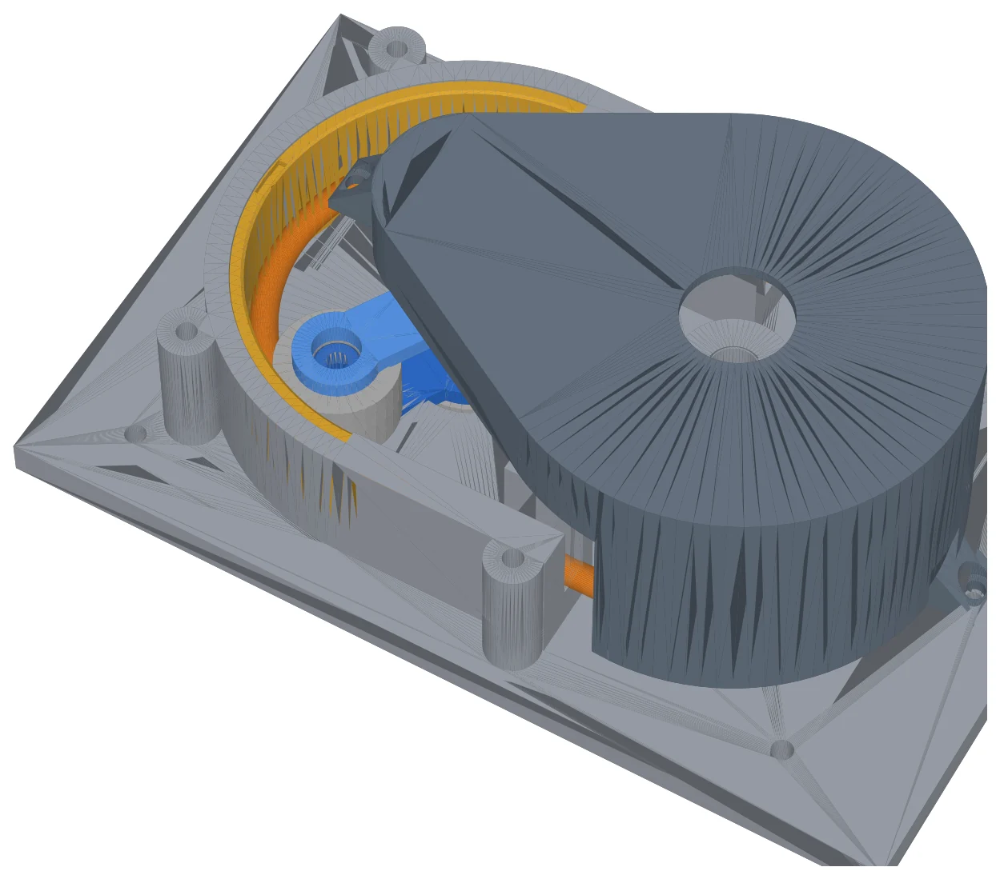
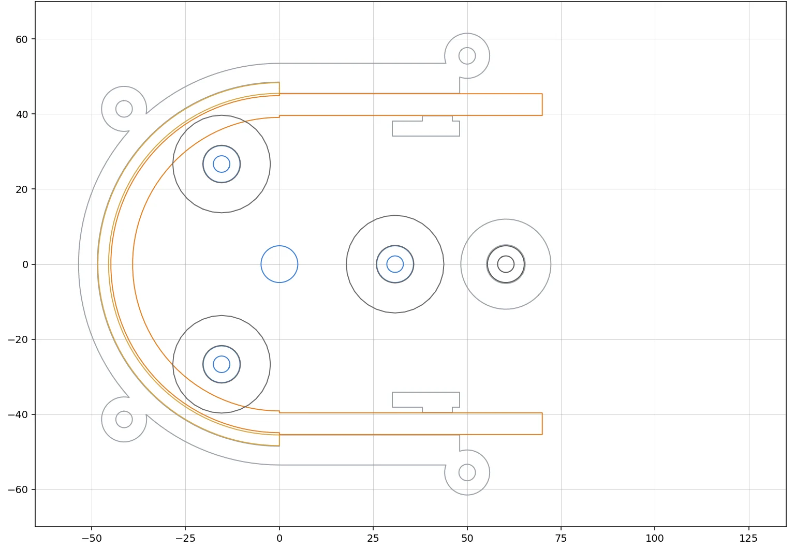

Scenario 3 pump: the method
A hand-cranked peristaltic pump that moves one pouch of fluid into another in 60 turns of a hex key. This page is the method, not a design: every number is the team's to calculate from the kit, Monday's answers and the capability data. Work through it in order. Each step produces a line for the decision matrix or a dimension for the CAD.
Beside each step are the numbers of a home build that follows the method: a pump sized to the same kit, 5 × 7 mm silicone tube, 6000 bearings, a 6 mm key, M4 hardware and a 25 mm grid, with 3 : 1 printed gears and a swappable race. Its CAD was generated by Claude for my own print on a Bambu P1S. It is not for submission and no part of it goes near the team's work. Nothing is printed or measured yet; every home-build number is a prediction, written down so the water runs can disagree with it. Drawing pack (PDF).

0. Fix the requirement numbers first
Monday's Q&A sets the target. Each unknown below changes the design, not just a number in it, so write the answers in the report's requirements table with a value next to each before anything is drawn.
| Unknown | Why it changes the design |
|---|---|
| Are the 60 revolutions counted on the key or on the rotor? | Key: a step-up gear multiplies volume. Rotor: gears are useless, only race radius and tube bore matter. |
| Which pouch, 350 mL or 1000 mL? | Sets the target volume. A pump that empties the bag in 40 turns wastes the other 20. |
| Is the tube supplied uncut, and may you cut it? | Two bag adapters need two tube ends. |
| Bearings as rollers allowed? | Rollers on the outer race then need no printed roller. |
| Does the hex key stay in during the test? Short arm in the socket? | The lever arm is 90 mm only if the long arm is the handle. |
In the home build
- Assumed
- Key counted, as much volume as possible, bearings as rollers, the key's 32 mm short arm in the socket and the 90 mm long arm as the handle
- If the rotor is counted
- the same pump delivers 280 mL in 60 turns, short of a 350 mL pouch; the race would have to grow to R_tube 60 mm
- Pouch neck
- unknown until Monday; the home build uses PCO-1881 soft-drink bottle caps with a vent hole instead, and a pouch plug is drawn for when the neck is measured
1. How much the pump moves per turn
One rotor revolution sweeps the whole tube on the race once. Volume per revolution is the bore area times the length of tube centre line on the race, discounted for the tube not re-opening fully.
V_rev = (π · ID² / 4) · (2π · R_tube) · η volume in 60 turns = 60 · V_rev · G G = gear ratio key to rotor, 1 without gears
ID is the bore from the kit tube, R_tube the radius of the tube centre line on the race, η the fill efficiency, 0.8 to 0.95. Set G · R_tube so that 60 turns delivers the bag volume with 10 to 20 percent spare. More than that is wasted material and more hand force.
The tube must re-open between roller passes, which caps the rotor speed. The 2 minute limit only binds if 60 turns at that speed take longer than 120 s.
max rotor speed = 1 / (N_rollers · t_reopen) rev/s check: 60 / (max rotor speed / G) < 120 s ?
| Pouch | G = 1 | G = 2 | G = 3 |
|---|---|---|---|
| R_tube for 350 mL with 15% spare | 60 mm | 30 mm | 20 mm |
| R_tube for 1000 mL with 15% spare | 173 mm | 86 mm | 58 mm |
| 60 turns at the home build's R_tube 42 mm | 280 mL | 560 mL | 839 mL |
At η = 0.9 with the 5 mm bore. A 1000 mL pouch on a direct drive needs a race that does not fit the board; a 350 mL pouch at 3 : 1 needs a race under the tube's bend radius (section 3). The pouch and the gear ratio are one decision.
In the home build
- Bore area
- π × 2.5² = 19.63 mm²
- Per rotor revolution
- 19.63 × 2π × 42 × 0.9 = 4.66 mL
- Per key turn
- × 3 through the gears = 14.0 mL
- 60 key turns
- 839 mL, the number the water runs test
- Flow ceiling
- re-open 0.15 s and 3 rollers cap the rotor at 2.2 rev/s, the crank at 0.74 rev/s; 60 turns take at least 81 s, so the turn count binds, not the clock
2. Occlusion: the one dimension that decides whether it pumps
The roller must close the tube completely at every pass or fluid runs back. The gap between roller and race is set from the tube wall, not from the bore.
wall = (OD - ID) / 2 gap = 2 · wall · (1 - squeeze) squeeze 0.10 to 0.20 R_race = R_pitch + R_roller + gap
Under 5 percent squeeze leaks back; over 25 percent needs a lot of force and wears the tube. R_pitch is the radius of the roller axes, R_roller the bearing's outer radius. Add up the tolerance stack from your capability data (race radius, roller position, bearing OD). If it is bigger than about 0.2 mm, design an adjustment: shims behind the race, slotted roller posts, or a race in two parts.
In the home build
- Wall
- (7 - 5) / 2 = 1.0 mm
- Gap
- 2 × 1.0 × (1 - 0.15) = 1.70 mm
- Race radius
- R_tube + OD / 2 = 42 + 3.5 = 45.5 mm
- Pitch radius
- 45.5 - 13 - 1.70 = 30.8 mm
- Stack
- liner radius ±0.10, pitch radius ±0.10, post in its bore ±0.10, bearing ±0.005: about ±0.3 mm on a 1.70 mm gap, so a fixed race could squeeze anywhere from 0% to 30%
- Adjustment
- the race is a swappable 3 mm liner, a 20 minute print, in three gaps: 1.50 mm (25%), 1.70 mm (15%), 1.90 mm (5%) squeeze. The housing is not reprinted to tune the gap
3. Rollers and wrap angle
With W degrees of tube on the race and N rollers equally spaced, one roller is always fully occluding only if the wrap covers more than one roller pitch.
W / (360 / N) ≥ 1 roller width > π · ID / 2 + wall (the flattened tube) tube bend radius ≥ 4 to 6 × OD (silicone)
Three rollers on 180 degrees gives 1.5; two rollers need more than 180 degrees. More rollers means smoother flow and less pulsation, but more force and more parts. The roller must be wider than the flattened tube, two bearings side by side if one is too narrow. Below the minimum bend radius the tube kinks on the inlet side.
In the home build
- Wrap check
- 180 / (360 / 3) = 1.5, so one roller is always closed while the released segment on the straight legs re-fills
- Roller width
- flattened tube π × 5 / 2 + 1 = 8.9 mm; one 8 mm bearing is too narrow, so each post carries two: a 16 mm roller. 6 roller bearings and two on the rotor shaft use the kit's eight exactly
- Bend radius
- 28 to 42 mm for the 7 mm tube; R_tube 42 mm sits at the safe end. The 20 mm race a 350 mL pouch would allow at 3 : 1 is under it
4. Torque and hand force
The squeeze sets the rotor torque. Estimate it, then measure it on the first prototype by hanging a mass on the key.
T = m · 9.81 · arm (measured, on the prototype) hand force = T_rotor · G / lever arm
With the key's long arm as the lever, under about 20 N is comfortable for 60 turns. This is the limit on G: doubling G doubles the force.
In the home build
- Per N m at the rotor
- 3 / 0.09 m = 33 N at the hand
- Over the range
- 0.05 to 0.3 N m is 2 to 10 N, 5 N in the middle: all under 20 N, so 3 : 1 is affordable if the torque guess holds
- Measured by
- the mass on the 90 mm arm that just turns the rotor through a full revolution, per liner
5. Gears, if the answer to question 1 is "key"
Spur gears of module 1.5 to 2 print cleanly on a 0.4 mm nozzle; module 1 does not. The pinion needs 17 teeth or more to avoid undercut at a 20 degree pressure angle.
ratio = wheel teeth / pinion teeth centre distance = module · (teeth1 + teeth2) / 2 + 0.2 to 0.4 mm backlash
- The hex socket for the key goes on the wheel hub; the pinion is fixed to the rotor shaft with a D-flat or a hex, never a round shaft.
- Every rotating part is trapped axially between two faces (bearing races, bosses, washers) so it cannot climb.
- Your capability data says how much backlash a printed pair needs.
In the home build
- Pair
- pinion 20 T on the rotor, wheel 60 T under the crank, module 1.5: 3 : 1 step-up, tip diameters 33 and 93 mm
- Centre distance
- 1.5 × (20 + 60) / 2 + 0.3 = 60.3 mm
- Key socket
- on the wheel hub, 6.25 mm across flats for the 6 mm key, 8 mm deep; the pinion sits on a D-flat
- Axial location
- rotor trapped between the lower bearing's inner race (spider boss) and the upper one (pinion boss, screwed to the shaft); the crank wheel under a penny washer with 0.3 mm play
6. Process per part: the decision that moves the most marks
Each part goes to the process that makes it fastest and most accurately, which is rarely the printer.
| Part type | Process | Why |
|---|---|---|
| Flat with holes: base plate, lid, rotor spiders, flanges, shims | Laser, 3 or 4 mm acrylic | Minutes per part, better hole accuracy than FDM, uses the sheet you are given, waste is marked |
| True 3D: race housing, gears, hex socket hub, tube exits | FDM | Only where the shape needs it; orient so no supports and no post-processing |
| Rollers, shafts | Bought bearings and M4 hardware | Kit items cost nothing and are precise |
- No part taller than it must be.
- Every printed part with its largest flat face down.
- No feature thinner than two walls, 1.6 mm.
- Holes the printer can print are never drilled.
In the home build
- Where it differs
- there is no laser at home, so the base plate, lid and spiders are printed too: about 600 cm³ of PLA, roughly 340 g and 20 to 24 hours on the P1S, most of it the base. In the lab those three are sheet parts
- Orientation
- every part flat on its largest face and no supports: lid and gear cover upside down, wheel gear face down, lower spider shaft up on a brim
7. Fits and tolerances from the capability data
For each fit write four things: the nominal, what the machine does to it (its mean error), the clearance or interference you want, and the resulting drawing dimension. Put the tolerances on the drawings; that is where the BS 8888 marks are.
| Fit | Target | Source of the number | Home build, to confirm |
|---|---|---|---|
| Bearing in a printed pocket | light press: pocket = OD + 0.05 to 0.15 | FDM hole mean error from the jig | 26.10 mm |
| Bearing on a printed post | slip: post = ID - 0.1 to 0.2 | FDM column mean error | 9.8 mm in the 10 mm bore |
| Hex socket for the key | the jig size that fits the real key | hex hole series on both jigs | 6.25 A/F, coupons at 6.0, 6.25, 6.5 |
| Laser-cut hole for an M4 | 4.3 to 4.5 after kerf | acrylic hole mean error | printed 4.4 |
| Laser-cut bearing hole | OD + 0.05 | acrylic hole mean error | not used |
| Gear centre distance | theoretical + backlash | FDM overall-length error | 60.3 mm |
| Printed shaft in a printed bush | slip | FDM hole and column errors | 9.8 in 10.3 |
8. Tube path and loading
The tube enters and leaves the race tangentially. The exits are straight guides long enough that the roller has released the tube before the guide starts; check it against the roller reach radius.
- A pinch at each exit, a channel 10 to 15 percent narrower than the OD, stops the tube creeping. It must not reduce the bore.
- The tube must be laid in and lifted out without tools and without undoing the closed circuit: a hinged lid, quarter-turn tabs or a sliding top are the usual answers. Time it on the prototype.
- Bag adapters: measure the pouch neck on Monday. A tapered plug with a barb for the 7 mm tube, printed, two off.

In the home build
- Exits
- U-channel 7.4 mm wide, narrowing to 6.0 mm for 8 mm (14% under the OD); a 5.6 mm rib on the lid drops into each channel and holds the tube with 0.3 mm play
- Loading
- lid on four M4 studs from below with printed thumb nuts: off by hand, tube in, lid on, no tool. The time to do it is a test result
- Adapters
- two printed bottle caps on PCO-1881 soft-drink bottles, each with a 7 mm tube hole and a 2 mm vent so the bottles neither collapse nor pressurise
9. Mounting and stability
- Four M4 through the breadboard grid, on grid nodes, as far apart as the footprint allows.
- Footprint no bigger than the board; keep the crank axis low; nothing cantilevered beyond the plate.
In the home build
- Base
- 200 × 130 × 8 mm with the rotor axis on a grid node and four M4 clearance holes 150 × 100 mm apart on the 25 mm grid
10. The test rig geometry
Bag 1 full, 5 cm below the pump; bag 2 empty, 5 cm above; zero is the tube centre through the pump. The head is tiny, 0.1 m of water, about 1 kPa. The pump does not need pressure. It needs volume per turn and no backflow.
11. Decision matrix rows to fill
Weight the criteria, score each option, and let the matrix choose. The last column is what the home build picked, one point in the space, not the answer.
| Row | Options | Home build |
|---|---|---|
| Roller count | 2 / 3 / 4 | 3 |
| Wrap angle | the degrees the race covers | 180° |
| Drive | direct / step-up | step-up 3 : 1 |
| Occlusion adjustment | fixed / shims / slotted posts | swappable liners |
| Lid fastening | bolts / quarter-turn / hinge | studs and thumb nuts |
| Base process | print / laser | print (no laser at home) |
| Roller type | bearing / printed | bearing, two high |
| Tube anchoring | pinch / clamp | pinch and lid rib |
Criteria: volume per turn, hand force, part count, print time, material, loading time, robustness, tolerance sensitivity.
12. Prototypes that cost minutes, not hours
Each one has an aim, a result and a change made. Photograph it with a ruler. Keep them for the report and reuse what you can.
- Hex-socket coupon. The jig sizes on both machines; pick the one that fits the key. Doubles as the FEA case 1 part.
- One roller post with two bearings. The post diameter that lets the bearing spin without wobble.
- A 60 degree segment of the race with one roller. Does the gap you chose occlude? Shim it and watch.
- The tube exit with the pinch. Does the tube creep after 60 turns?
- The lid fastening on its own. Can you load the tube in 10 seconds?
In the home build
- First print
- one coupon plate, about 25 minutes: three hex sockets at 6.0, 6.25 and 6.5, three bearing pockets, three posts, three bush bores, an M4 nut trap and a 20 mm bar to measure shrink. The winners go into the parameter file and everything is rebuilt before the big parts print
- Race segment
- the liner itself is the segment: 20 minutes each, three gaps, swapped in the same housing
13. What to measure on the final pump
- Volume per 60 turns, by weighing the bag, three repeats.
- Time per run.
- Hand torque on the key.
- Leak check.
- Tube creep after 60 turns.
Compare each with section 1's prediction in the results section.
The home build's pre-registered test
- Written before the first print
- the 1.70 mm liner delivers 750 to 850 mL in 60 key turns at a comfortable 0.5 rev/s; the 1.90 mm liner less, because occlusion is incomplete; the 1.50 mm liner about the same as 1.70 but with more hand force
- What would falsify it
- if 1.90 pumps as well as 1.70, the incomplete-occlusion story is wrong, and that goes in the write-up
- Protocol
- coupons; a dry run of 60 turns, timed, noting where it binds; three water runs per liner, bottle 5 cm below to bottle 5 cm above, mass on a kitchen scale; torque by hanging mass; then the comparison
Generated by tools/make_pump_method.py from the snapshot in this script. The home build's guesses, to retire by measurement: fill efficiency 0.9, re-open time 0.15 s, rotor torque 0.05 to 0.3 N m, hex socket 6.25 A/F, post 9.8 mm, bearing pocket +0.10, bush clearance 0.25.
Home build v2 CAD, drawings and design document: generated by Claude on 9 November 2026 for Paing Hein Htet's own learning build, credited as such. The MPHY0010 Scenario 3 team CAD, drawings, FEA and report are the team's own work, by hand.